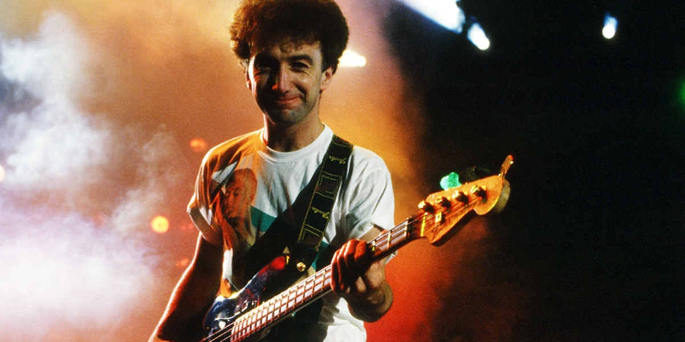
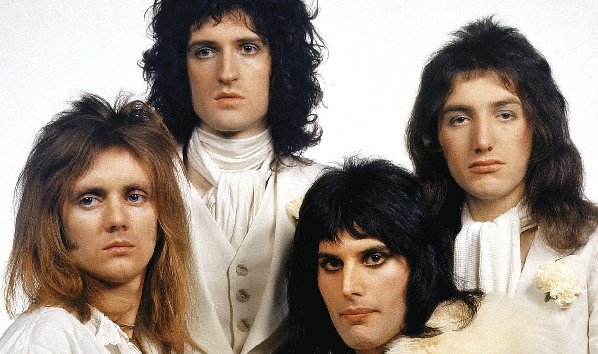

John Deacon
John Deacon
John Richard Deacon (Oadby, Leicester, Inglaterra; 19 de agosto de 1951) es un ingeniero, músico y compositor británico, famoso por haber sido el bajista de la banda de rock Queen. En varios discos también desempeñó el papel de guitarrista y más ocasionalmente de teclista. Es el autor de algunos de los grandes éxitos de la banda, tales como "You're My Best Friend", "Spread Your Wings", "Another One Bites the Dust", "I Want to Break Free" o "Friends Will Be Friends", lo que demuestra su importante aporte al grupo en materia creativa. Considerado uno de los bajistas más versátiles de la historia del rock, la revista Rolling Stone lo colocó en el puesto 32 en su lista de los 100 mejores bajistas de la historia.
Queen
 (De izquierda a derecha: Roger Taylor, Brian May, Freddie Mercury, John Deacon)A principios de 1971 acudió con Peter Stoddart y una amiga, Christine Farnell, al María Assumpta Teacher Training College. Christine le presentó a tres amigos suyos: Roger Taylor, Brian May y Freddie Mercury. Al estar May y Taylor buscando bajista para su grupo Queen, le preguntaron a Deacon si le gustaría hacer una prueba. La prueba tuvo lugar días después en el Imperial College, y los miembros de Queen pensaron que era muy bueno, y que por ser bastante callado pensaron que podría adaptarse sin demasiados problemas. El hecho de que fuese un "mago" de la electrónica fue un factor decisivo para su aceptación. Posteriormente, gracias a su formación como ingeniero electrónico, construyó y adaptó equipos para la banda. Su creación más conocida es el "Deacy Amp", usado por Brian May y él mismo, al final del tema "Bohemian Rhapsody". Unos días después (el 1 de marzo de 1971), lo llamaron para decirle que lo aceptaban, y John Deacon se convirtió en el cuarto y definitivo miembro de Queen.1 John pasó los siguientes 16 años de gira con Queen, coproduciendo doce álbumes y treinta y dos sencillos. En 1986 John realizó su primer y único trabajo como solista. Formó el grupo The Immortals junto a Robert Ahwai y Lenny Zakatek, para grabar un único tema titulado No Turning Back, lanzado al mercado ese mismo año y apareciendo en el filme Biggles, en cual John hace una aparición menor.